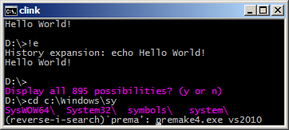
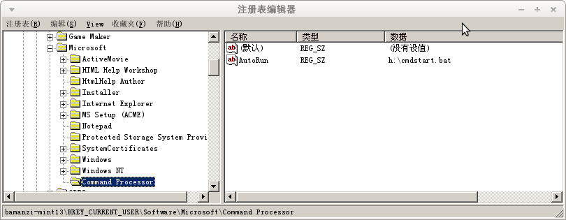

Created 星期四 30 五月 2013
@windows @cmdline @readline
用惯了Linux下的bash，在Windows下对于那个cmd.exe很恼火，且不说双引号区分参数这样的“高级”问题，就是调个历史命令都麻烦得很，命令行编辑能力相当弱。
最近发现了clink这个扩展，可以让cmd.exe拥有几乎readline的全部能力。
clink: Bringing Bash's powerful command line editing to Microsoft Windows' cmd.exe
http://code.google.com/p/clink/
- Powerful Bash-like line editing from GNU's Readline library. Read more on Readline's keyboard shortcuts.
- Superior path completion (TAB).
- Paste from clipboard (Ctrl-V).
- Support for the completion of executables/commands, and environment variables.
- Undo/Redo (Ctrl-_ or Ctrl-X, Ctrl-U)
- Improved command line history.
- Persists across sessions.
- Searchable (Ctrl-R and Ctrl-S).
- History expansion (e.g. !!, !<string>, and !$).
- Scriptable completion using Lua.

跟随cmd自动启动clink
clink的安装程序带有“Autorun when cmd.exe starts"选项，但如果你不想使用安装程序，又想要在启动cmd时自动启动clink，可以按如下办法:
- 打开注册表编辑器，找到（或者新建）
HKEY_CURRENT_USER\Software\Microsoft\Command Processor - 在该键下新建一个字符串项，名为
AutoRun - 将
AutoRun的值设置为一个bat文件的路径，比如d:\cmdstart.cmd - 编辑
d:\cmdstart.cmd，里面写一句d:\tools\clink /inject（当然你也可以再添加其他命令）

{kind=link}
{kind=link}